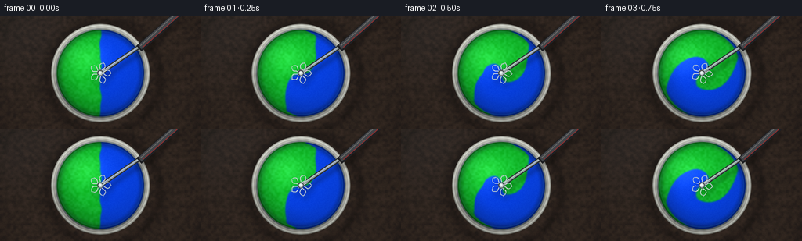
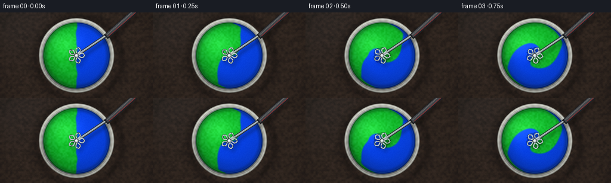
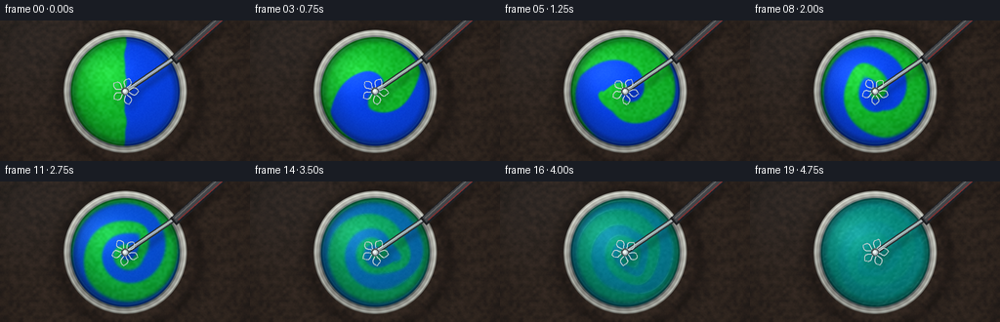
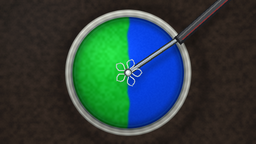
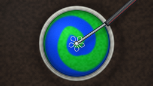
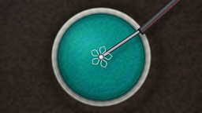
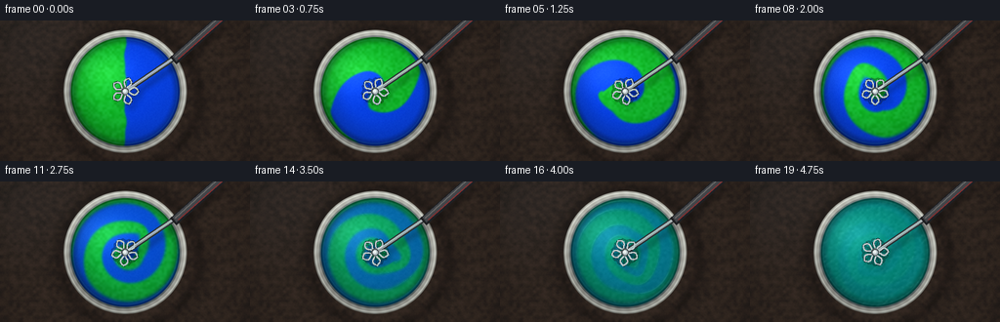

CODING AGENTS AS PIXEL WORLD MODELS
traex/DeepSeek-V4.1-Flash · phygen_123
点击播放 · 原生 RGB 像素
逐轮保存的候选
回放视频、检查图与代码变化。
每份候选均可单独播放。实际图片检查记录在下方工具轨迹中。
候选 01播放与检查图
点击播放 · 原生 RGB 像素


展开代码变化
--- 上一保存版本
+++ 本次保存版本
@@ -0,0 +1,432 @@
+"""Procedural render of green and blue paint being vigorously mixed."""
+
+from __future__ import annotations
+
+import json
+import math
+import shutil
+import subprocess
+from pathlib import Path
+
+import numpy as np
+from PIL import Image, ImageDraw, ImageFilter
+
+import artifact_io
+
+
+CASE_DIR = Path(__file__).resolve().parent
+SS = 2
+OUT_W, OUT_H = 256, 144
+W, H = OUT_W * SS, OUT_H * SS
+CX, CY = 256.0, 145.0
+OUTER_R = 126.0
+PAINT_R = 111.0
+
+
+def smoothstep(a: float, b: float, value: np.ndarray | float):
+ t = np.clip((value - a) / (b - a), 0.0, 1.0)
+ return t * t * (3.0 - 2.0 * t)
+
+
+def value_noise(rng: np.random.Generator, shape: tuple[int, int], scale: int) -> np.ndarray:
+ small_h = max(3, shape[0] // scale + 3)
+ small_w = max(3, shape[1] // scale + 3)
+ coarse = rng.random((small_h, small_w), dtype=np.float32)
+ image = Image.fromarray((coarse * 255).astype(np.uint8), mode="L")
+ image = image.resize((shape[1], shape[0]), Image.Resampling.BICUBIC)
+ return np.asarray(image, dtype=np.float32) / 255.0
+
+
+def bilinear(field: np.ndarray, xs: np.ndarray, ys: np.ndarray) -> np.ndarray:
+ x0 = np.floor(xs).astype(np.int32)
+ y0 = np.floor(ys).astype(np.int32)
+ x1 = x0 + 1
+ y1 = y0 + 1
+ fx = (xs - x0).astype(np.float32)
+ fy = (ys - y0).astype(np.float32)
+ x0 = np.clip(x0, 0, W - 1)
+ x1 = np.clip(x1, 0, W - 1)
+ y0 = np.clip(y0, 0, H - 1)
+ y1 = np.clip(y1, 0, H - 1)
+ top = field[y0, x0] * (1.0 - fx) + field[y0, x1] * fx
+ bottom = field[y1, x0] * (1.0 - fx) + field[y1, x1] * fx
+ return top * (1.0 - fy) + bottom * fy
+
+
+def build_background(rng: np.random.Generator) -> np.ndarray:
+ yy, xx = np.mgrid[0:H, 0:W].astype(np.float32)
+ grain = value_noise(rng, (H, W), 7)
+ fine = value_noise(rng, (H, W), 2)
+ wave = (
+ 0.55 * np.sin(yy * 0.19 + 1.9 * np.sin(xx * 0.026))
+ + 0.28 * np.sin(yy * 0.48 + xx * 0.018)
+ + 0.17 * np.sin(yy * 1.07 + 0.4)
+ )
+ grain = np.clip(0.58 * grain + 0.22 * fine + 0.20 * (wave * 0.5 + 0.5), 0.0, 1.0)
+ base = np.empty((H, W, 3), dtype=np.float32)
+ base[..., 0] = 0.105 + 0.090 * grain
+ base[..., 1] = 0.083 + 0.061 * grain
+ base[..., 2] = 0.072 + 0.044 * grain
+
+ # A cool reflected rim light keeps the walnut surface from reading as a flat brown field.
+ cool = np.exp(-(((xx - 44.0) / 170.0) ** 2 + ((yy - 30.0) / 120.0) ** 2))
+ base += cool[..., None] * np.array([0.010, 0.018, 0.022], dtype=np.float32)
+
+ # Bowl contact shadow, offset toward the lower right.
+ sx, sy = xx - CX - 9.0, yy - CY - 11.0
+ shadow_dist = np.sqrt(sx * sx + sy * sy) - OUTER_R
+ shadow = np.exp(-((shadow_dist / 24.0) ** 2)) * smoothstep(-2.0, 26.0, shadow_dist)
+ base *= (1.0 - 0.58 * shadow)[..., None]
+
+ rr = np.sqrt((xx - CX) ** 2 + (yy - CY) ** 2)
+ vignette = 1.0 - 0.25 * smoothstep(190.0, 360.0, np.sqrt((xx - 256.0) ** 2 + (yy - 145.0) ** 2))
+ base *= vignette[..., None]
+ return np.clip(base, 0.0, 1.0)
+
+
+def bowl_mask(radius: float) -> np.ndarray:
+ yy, xx = np.mgrid[0:H, 0:W].astype(np.float32)
+ rr = np.sqrt((xx - CX) ** 2 + (yy - CY) ** 2)
+ return np.clip(radius + 0.75 - rr, 0.0, 1.0)
+
+
+def build_bowl(rng: np.random.Generator) -> tuple[np.ndarray, np.ndarray, np.ndarray, np.ndarray]:
+ yy, xx = np.mgrid[0:H, 0:W].astype(np.float32)
+ dx, dy = xx - CX, yy - CY
+ rr = np.sqrt(dx * dx + dy * dy)
+ theta = np.arctan2(dy, dx)
+
+ rim_mask = np.clip(OUTER_R + 0.8 - rr, 0.0, 1.0)
+ paint_mask = np.clip(PAINT_R + 1.1 - rr, 0.0, 1.0)
+ inner_wall = smoothstep(PAINT_R - 1.0, PAINT_R + 2.0, rr) * (1.0 - smoothstep(114.0, 116.0, rr))
+
+ # Ceramic is brightest at the upper left and picks up a faint teal bounce at the inner lip.
+ key = 0.78 + 0.24 * np.exp(-(((dx + 40.0) / 100.0) ** 2 + ((dy + 42.0) / 85.0) ** 2))
+ key -= 0.20 * smoothstep(35.0, 126.0, rr) * (0.5 + 0.5 * np.sin(theta - 0.7))
+ ceramic = np.empty((H, W, 3), dtype=np.float32)
+ ceramic[..., 0] = 0.805 * key
+ ceramic[..., 1] = 0.805 * key
+ ceramic[..., 2] = 0.765 * key
+
+ groove = 0.035 * np.sin(theta * 36.0 + rr * 0.11)
+ ceramic += groove[..., None] * np.array([0.55, 0.65, 0.70], dtype=np.float32)
+ ceramic -= inner_wall[..., None] * np.array([0.24, 0.21, 0.18], dtype=np.float32)
+ ceramic += np.exp(-((rr - 122.0) / 1.25) ** 2)[..., None] * np.array([0.17, 0.18, 0.17], dtype=np.float32)
+ ceramic -= np.exp(-((rr - 127.0) / 2.0) ** 2)[..., None] * 0.23
+ ceramic += (rng.random((H, W, 1), dtype=np.float32) - 0.5) * 0.010
+
+ # A narrow dark meniscus makes the paint read as a liquid inside the bowl.
+ lip_dark = np.exp(-((rr - PAINT_R + 1.2) / 2.0) ** 2)
+ lip_glint = np.exp(-((rr - PAINT_R + 5.0) / 1.3) ** 2) * (0.5 + 0.5 * np.cos(theta + 2.1))
+ ceramic *= (1.0 - 0.28 * lip_dark)[..., None]
+ ceramic += lip_glint[..., None] * np.array([0.11, 0.14, 0.13], dtype=np.float32)
+ return rim_mask, paint_mask, ceramic, inner_wall
+
+
+def initial_paint(rng: np.random.Generator) -> tuple[np.ndarray, np.ndarray, np.ndarray]:
+ yy, xx = np.mgrid[0:H, 0:W].astype(np.float32)
+ nx, ny = (xx - CX), (yy - CY)
+ # Equal left/right areas, with a soft poured edge rather than a ruler-straight split.
+ boundary = 1.8 * np.sin(ny * 0.072) + 0.9 * np.sin(ny * 0.16 + 1.3)
+ c = 0.5 * (1.0 - np.tanh((nx + boundary) / 2.0))
+ c = np.clip(c, 0.0, 1.0).astype(np.float32)
+ texture_a = value_noise(rng, (H, W), 5)
+ texture_b = value_noise(rng, (H, W), 2)
+ rr = np.sqrt(nx * nx + ny * ny)
+ return c, texture_a.astype(np.float32), (0.55 * texture_b + 0.45 * (rr / PAINT_R)).astype(np.float32)
+
+
+def velocity_field(t: float) -> tuple[np.ndarray, np.ndarray]:
+ yy, xx = np.mgrid[0:H, 0:W].astype(np.float32)
+ x, y = xx - CX, yy - CY
+ r = np.sqrt(x * x + y * y) + 0.001
+ theta = np.arctan2(y, x)
+
+ # Differential rotation winds the two colors into long spiral ribbons.
+ omega = 1.25 + 4.7 * np.exp(-((r / 61.0) ** 2))
+ omega *= 0.93 + 0.07 * np.sin(t * 3.1)
+ u = -omega * y
+ v = omega * x
+
+ # Two satellite eddies break the vortex symmetry and accelerate pigment exchange.
+ for phase, sign, radius, sigma, strength in (
+ (1.15 + 1.55 * t, 1.0, 51.0, 34.0, 78.0),
+ (3.65 - 1.20 * t, -1.0, 43.0, 31.0, 66.0),
+ ):
+ ex = CX + radius * math.cos(phase)
+ ey = CY + radius * math.sin(phase)
+ dx, dy = xx - ex, yy - ey
+ rr = np.sqrt(dx * dx + dy * dy) + 2.0
+ local = strength * np.exp(-(rr / sigma) ** 2)
+ u += -sign * local * dy / rr
+ v += sign * local * dx / rr
+
+ # Gentle inward pulse keeps the painted surface coherent inside the meniscus.
+ pulse = 7.0 * math.sin(t * 4.1) * np.exp(-(r / 98.0) ** 2)
+ u += pulse * x / r
+ v += pulse * y / r
+ return u.astype(np.float32), v.astype(np.float32)
+
+
+def advect(c: np.ndarray, t: float, dt: float) -> np.ndarray:
+ u, v = velocity_field(t)
+ yy, xx = np.mgrid[0:H, 0:W].astype(np.float32)
+ x = xx - CX
+ y = yy - CY
+ # Reflective confinement near the bowl wall.
+ r = np.sqrt(x * x + y * y) + 0.001
+ wall = smoothstep(PAINT_R - 9.0, PAINT_R, r)
+ u *= (1.0 - 0.78 * wall)
+ v *= (1.0 - 0.78 * wall)
+ sx = xx - u * dt
+ sy = yy - v * dt
+
+ # Clamp back-traced positions to the circular vessel.
+ bx, by = sx - CX, sy - CY
+ br = np.sqrt(bx * bx + by * by) + 0.001
+ scale = np.minimum(1.0, (PAINT_R - 1.4) / br)
+ sx = CX + bx * scale
+ sy = CY + by * scale
+ out = bilinear(c, sx, sy)
+
+ # Mild numerical diffusion is enough because the imposed flow provides strong stretching.
+ padded = np.pad(out, 1, mode="edge")
+ neighbors = (
+ padded[1:-1, :-2] + padded[1:-1, 2:] + padded[:-2, 1:-1] + padded[2:, 1:-1]
+ ) * 0.25
+ out = 0.955 * out + 0.045 * neighbors
+ return out.astype(np.float32)
+
+
+def paint_surface(c: np.ndarray, texture_a: np.ndarray, texture_b: np.ndarray, t: float) -> np.ndarray:
+ yy, xx = np.mgrid[0:H, 0:W].astype(np.float32)
+ x, y = xx - CX, yy - CY
+ r = np.sqrt(x * x + y * y)
+
+ uniformity = smoothstep(2.05, 4.62, t)
+ c_display = c * (1.0 - 0.965 * uniformity) + 0.5 * (0.965 * uniformity)
+
+ green = np.array([0.055, 0.720, 0.145], dtype=np.float32)
+ blue = np.array([0.018, 0.235, 0.925], dtype=np.float32)
+ teal = np.array([0.006, 0.510, 0.475], dtype=np.float32)
+ low_mix = blue[None, None, :] * (1.0 - 2.0 * c_display[..., None]) + teal[None, None, :] * (
+ 2.0 * c_display[..., None]
+ )
+ high_mix = teal[None, None, :] * (2.0 - 2.0 * c_display[..., None]) + green[None, None, :] * (
+ 2.0 * c_display[..., None] - 1.0
+ )
+ paint = np.where((c_display >= 0.5)[..., None], high_mix, low_mix)
+
+ # Each pigment carries a slightly different fine texture.
+ green_grain = (texture_a - 0.5) * 0.105
+ blue_grain = (texture_b - 0.5) * 0.060
+ pigment_tex = green_grain * c_display + blue_grain * (1.0 - c_display)
+ paint += pigment_tex[..., None] * np.array([0.46, 0.74, 0.85], dtype=np.float32)
+
+ # Soft illumination, edge occlusion, and a broad wet-paint reflection.
+ light = 0.88 + 0.20 * np.exp(-(((x + 38.0) / 88.0) ** 2 + ((y + 37.0) / 70.0) ** 2))
+ light -= 0.20 * smoothstep(50.0, 111.0, r) * (0.5 + 0.5 * np.sin(np.arctan2(y, x) - 0.9))
+ edge_ao = 0.74 + 0.26 * smoothstep(4.0, 18.0, PAINT_R - r)
+ paint *= (light * edge_ao)[..., None]
+
+ gy, gx = np.gradient(c_display)
+ interface = np.exp(-((np.abs(c_display - 0.5) / 0.045) ** 2))
+ height = (
+ 0.48 * interface
+ + 0.25 * texture_a
+ + 0.11 * np.sin(x * 0.09 + t * 2.3)
+ + 0.08 * np.sin(y * 0.12 - t * 1.7)
+ )
+ hy, hx = np.gradient(height)
+ nx = -hx * 2.0
+ ny = -hy * 2.0
+ nz = np.ones_like(nx)
+ norm = np.sqrt(nx * nx + ny * ny + nz * nz)
+ nx, ny, nz = nx / norm, ny / norm, nz / norm
+ lx, ly, lz = -0.44, -0.63, 0.64
+ hx_l, hy_l, hz_l = lx, ly, lz + 1.0
+ hn = math.sqrt(hx_l * hx_l + hy_l * hy_l + hz_l * hz_l)
+ spec = np.clip((nx * hx_l + ny * hy_l + nz * hz_l) / (norm * hn), 0.0, 1.0) ** 42
+ spec *= 0.62 * interface + 0.10
+ paint += spec[..., None] * np.array([0.78, 0.96, 0.91], dtype=np.float32)
+
+ wet = np.exp(-(((x + 43.0) / 54.0) ** 2 + ((y + 40.0) / 38.0) ** 2))
+ paint += wet[..., None] * np.array([0.065, 0.085, 0.078], dtype=np.float32)
+
+ # Slightly darker, thicker paint at the meniscus.
+ meniscus = np.exp(-((PAINT_R - r) / 3.8) ** 2)
+ paint *= (1.0 - 0.31 * meniscus)[..., None]
+ paint += np.exp(-((PAINT_R - r - 4.3) / 1.0) ** 2)[..., None] * np.array(
+ [0.015, 0.060, 0.055], dtype=np.float32
+ )
+ return np.clip(paint, 0.0, 1.0)
+
+
+def cubic_curve(start, control, end, count=22):
+ pts = []
+ for i in range(count):
+ s = i / (count - 1)
+ x = (1 - s) ** 2 * start[0] + 2 * (1 - s) * s * control[0] + s * s * end[0]
+ y = (1 - s) ** 2 * start[1] + 2 * (1 - s) * s * control[1] + s * s * end[1]
+ pts.append((x, y))
+ return pts
+
+
+def utensil_layers(t: float, speed: float) -> tuple[Image.Image, Image.Image, Image.Image]:
+ wire = Image.new("L", (W, H), 0)
+ steel = Image.new("RGBA", (W, H), (0, 0, 0, 0))
+ shaft = Image.new("RGBA", (W, H), (0, 0, 0, 0))
+ wd = ImageDraw.Draw(wire)
+ sd = ImageDraw.Draw(steel)
+ hd = ImageDraw.Draw(shaft)
+
+ # Shaft and grip rise diagonally out of the bowl, fixing the whisk in the hand.
+ p0 = (CX, CY)
+ p1 = (388.0, 55.0)
+ hd.line([p0, p1], fill=(36, 40, 43, 255), width=11)
+ hd.line([p0, p1], fill=(142, 151, 153, 255), width=6)
+ hd.line([(CX - 2.0, CY - 1.0), (386.0, 56.0)], fill=(220, 228, 228, 190), width=2)
+ grip_start = (355.0, 82.0)
+ grip_end = (476.0, -25.0)
+ hd.line([grip_start, grip_end], fill=(24, 25, 27, 255), width=20)
+ hd.line([(357.0, 78.0), (475.0, -26.0)], fill=(59, 61, 64, 255), width=13)
+ hd.line([(359.0, 74.0), (473.0, -29.0)], fill=(109, 110, 108, 220), width=2)
+ hd.line([(365.0, 78.0), (474.0, -18.0)], fill=(151, 42, 43, 210), width=2)
+
+ # Rotating five-lobed balloon whisk, drawn as paired bowed wires.
+ spin = t * (10.2 if t < 3.3 else max(4.2, 10.2 - (t - 3.3) * 2.3))
+ ghost_count = 3 if speed > 4.0 else 1
+ for ghost in range(ghost_count):
+ lag = (ghost - (ghost_count - 1) * 0.5) * 0.035
+ angle = spin - lag * 10.2
+ alpha = 65 if ghost != ghost_count // 2 else 255
+ width = 2 if ghost != ghost_count // 2 else 3
+ for lobe in range(5):
+ base = angle + lobe * math.tau / 5.0
+ for bend in (-0.46, 0.46):
+ pts = []
+ for i in range(25):
+ s = i / 24.0
+ radius = 27.5 * (s ** 0.72)
+ phi = base + bend * math.sin(math.pi * s) * (0.75 + 0.25 * s)
+ pts.append((CX + radius * math.cos(phi), CY + radius * math.sin(phi)))
+ wd.line(pts, fill=alpha, width=width, joint="curve")
+ if ghost == ghost_count // 2:
+ sd.line(pts, fill=(181, 196, 198, 235), width=2, joint="curve")
+ sd.line(pts[:16], fill=(243, 248, 247, 210), width=1, joint="curve")
+
+ # Central ferrule and hub.
+ wd.ellipse((CX - 7.5, CY - 7.5, CX + 7.5, CY + 7.5), fill=255)
+ sd.ellipse((CX - 7.5, CY - 7.5, CX + 7.5, CY + 7.5), fill=(66, 72, 74, 255))
+ sd.ellipse((CX - 5.0, CY - 5.0, CX + 5.0, CY + 5.0), fill=(175, 188, 190, 255))
+ sd.ellipse((CX - 3.3, CY - 3.8, CX + 2.6, CY + 2.0), fill=(238, 244, 242, 245))
+
+ return wire, steel, shaft
+
+
+def composite_tool(paint: np.ndarray, t: float, speed: float) -> np.ndarray:
+ wire, steel, shaft = utensil_layers(t, speed)
+
+ # Blurred contact shadows first, then the reflective tool.
+ shadow = Image.new("L", (W, H), 0)
+ shadow.paste(wire, (7, 9), wire)
+ shaft_alpha = shaft.getchannel("A")
+ shadow.paste(shaft_alpha, (9, 12), shaft_alpha)
+ shadow = shadow.filter(ImageFilter.GaussianBlur(5.0))
+ shadow_np = np.asarray(shadow, dtype=np.float32) / 255.0
+ paint *= (1.0 - 0.30 * shadow_np)[..., None]
+
+ base = Image.fromarray((np.clip(paint, 0.0, 1.0) * 255).astype(np.uint8), mode="RGB").convert("RGBA")
+ base.alpha_composite(shaft)
+ base.alpha_composite(steel)
+ return np.asarray(base.convert("RGB"), dtype=np.float32) / 255.0
+
+
+def render_frame(
+ c: np.ndarray,
+ texture_a: np.ndarray,
+ texture_b: np.ndarray,
+ t: float,
+ background: np.ndarray,
+ rim_mask: np.ndarray,
+ paint_mask: np.ndarray,
+ ceramic: np.ndarray,
+ speed: float,
+) -> np.ndarray:
+ paint = paint_surface(c, texture_a, texture_b, t)
+ image = background.copy()
+ image = image * (1.0 - rim_mask[..., None]) + ceramic * rim_mask[..., None]
+ image = image * (1.0 - paint_mask[..., None]) + paint * paint_mask[..., None]
+ image = composite_tool(image, t, speed)
+
+ # A restrained filmic grade preserves saturated pigments without clipped channels.
+ image = np.clip(image, 0.0, 1.0)
+ image = np.power(image, 0.93)
+ image += np.array([0.006, 0.008, 0.008], dtype=np.float32)
+ return np.clip(image, 0.0, 1.0)
+
+
+def main() -> None:
+ spec = json.loads((CASE_DIR / "task_spec.json").read_text())
+ n = int(spec["frames"])
+ fps = float(spec["fps"])
+ rng = np.random.default_rng(271828)
+
+ background = build_background(rng)
+ rim_mask, paint_mask, ceramic, _ = build_bowl(rng)
+ c, texture_a, texture_b = initial_paint(rng)
+
+ frames = []
+ substeps = 8
+ dt = (1.0 / fps) / substeps
+ for index in range(n):
+ t = index / fps
+ if index == 0:
+ speed = 0.0
+ else:
+ speed = 8.5 * smoothstep(0.0, 0.55, t) * (1.0 - 0.40 * smoothstep(3.1, 4.75, t))
+ frame = render_frame(c, texture_a, texture_b, t, background, rim_mask, paint_mask, ceramic, speed)
+ frames.append((frame * 255.0 + 0.5).astype(np.uint8))
+
+ if index < n - 1:
+ for substep in range(substeps):
+ step_t = t + (substep + 0.5) * dt
+ c = advect(c, step_t, dt)
+
+ frames = np.stack(frames, axis=0)
+ # Lanczos downsampling gives the small output clean tool edges and controlled pigment texture.
+ small = []
+ for frame in frames:
+ image = Image.fromarray(frame, mode="RGB").resize((OUT_W, OUT_H), Image.Resampling.LANCZOS)
+ small.append(np.asarray(image, dtype=np.uint8))
+ frames = np.stack(small, axis=0)
+
+ artifact_io.save(frames, CASE_DIR)
+
+ # An MP4 is convenient for direct playback; the contract artifacts above remain canonical.
+ ffmpeg = shutil.which("ffmpeg")
+ if ffmpeg:
+ subprocess.run(
+ [
+ ffmpeg,
+ "-y",
+ "-loglevel",
+ "error",
+ "-framerate",
+ str(fps),
+ "-i",
+ str(CASE_DIR / "frames" / "%02d.png"),
+ "-c:v",
+ "libx264",
+ "-pix_fmt",
+ "yuv420p",
+ "-crf",
+ "18",
+ str(CASE_DIR / "paint_mixing.mp4"),
+ ],
+ check=True,
+ )
+
+
+if __name__ == "__main__":
+ main()
候选 02播放与检查图
点击播放 · 原生 RGB 像素


展开代码变化
--- 上一保存版本
+++ 本次保存版本
@@ -32,7 +32,7 @@
small_h = max(3, shape[0] // scale + 3)
small_w = max(3, shape[1] // scale + 3)
coarse = rng.random((small_h, small_w), dtype=np.float32)
- image = Image.fromarray((coarse * 255).astype(np.uint8), mode="L")
+ image = Image.fromarray((coarse * 255).astype(np.uint8))
image = image.resize((shape[1], shape[0]), Image.Resampling.BICUBIC)
return np.asarray(image, dtype=np.float32) / 255.0
@@ -300,7 +300,7 @@
lag = (ghost - (ghost_count - 1) * 0.5) * 0.035
angle = spin - lag * 10.2
alpha = 65 if ghost != ghost_count // 2 else 255
- width = 2 if ghost != ghost_count // 2 else 3
+ width = 3 if ghost != ghost_count // 2 else 5
for lobe in range(5):
base = angle + lobe * math.tau / 5.0
for bend in (-0.46, 0.46):
@@ -312,7 +312,7 @@
pts.append((CX + radius * math.cos(phi), CY + radius * math.sin(phi)))
wd.line(pts, fill=alpha, width=width, joint="curve")
if ghost == ghost_count // 2:
- sd.line(pts, fill=(181, 196, 198, 235), width=2, joint="curve")
+ sd.line(pts, fill=(181, 196, 198, 245), width=3, joint="curve")
sd.line(pts[:16], fill=(243, 248, 247, 210), width=1, joint="curve")
# Central ferrule and hub.
@@ -336,7 +336,11 @@
shadow_np = np.asarray(shadow, dtype=np.float32) / 255.0
paint *= (1.0 - 0.30 * shadow_np)[..., None]
- base = Image.fromarray((np.clip(paint, 0.0, 1.0) * 255).astype(np.uint8), mode="RGB").convert("RGBA")
+ base = Image.fromarray((np.clip(paint, 0.0, 1.0) * 255).astype(np.uint8)).convert("RGBA")
+ dark_wire = Image.new("RGBA", (W, H), (0, 0, 0, 0))
+ dark_wire.putalpha(wire.point(lambda value: value * 0.74))
+ dark_wire = Image.composite(Image.new("RGBA", (W, H), (16, 27, 28, 255)), dark_wire, dark_wire.getchannel("A"))
+ base.alpha_composite(dark_wire)
base.alpha_composite(shaft)
base.alpha_composite(steel)
return np.asarray(base.convert("RGB"), dtype=np.float32) / 255.0
@@ -397,7 +401,7 @@
# Lanczos downsampling gives the small output clean tool edges and controlled pigment texture.
small = []
for frame in frames:
- image = Image.fromarray(frame, mode="RGB").resize((OUT_W, OUT_H), Image.Resampling.LANCZOS)
+ image = Image.fromarray(frame).resize((OUT_W, OUT_H), Image.Resampling.LANCZOS)
small.append(np.asarray(image, dtype=np.uint8))
frames = np.stack(small, axis=0)
可观测工具轨迹
实际执行的命令与返回图片。
命令 1exit 0
/bin/bash -c "pwd && rg --files -g '"'!*.mp4'"' -g '"'!*.mov'"' -g '"'!*.webm'"' | sort"
命令 2exit 0
/bin/bash -c "sed -n '1,240p' prompt.txt"
命令 3exit 0
/bin/bash -c "sed -n '1,260p' GENERATION_RULES.md"
命令 4exit 0
/bin/bash -c 'cat task_spec.json'
命令 5exit 0
/bin/bash -c "sed -n '1,260p' artifact_io.py && python - <<'PY'
import numpy, PIL
print('numpy', numpy.__version__)
print('Pillow', PIL.__version__)
PY"命令 6exit 0
/bin/bash -c "python - <<'PY'
mods=['scipy','cv2','imageio','matplotlib']
for m in mods:
try:
x=__import__(m)
print(m, getattr(x,'__version__','ok'))
except Exception as e:
print(m,'missing',e)
PY"命令 7exit 0
/bin/bash -c "rg --files -g 'generate.py' -g '*.md' -g '*.json' | sort | head -80"
命令 8exit 0
/bin/bash -c 'python generate.py'
命令 9exit 0
/bin/bash -c 'python generate.py'
命令 10exit 127
/bin/bash -c 'ffprobe -v error -select_streams v:0 -show_entries stream=codec_name,width,height,r_frame_rate,nb_frames,pix_fmt -show_entries format=duration -of json paint_mixing.mp4'
命令 11exit 0
/bin/bash -c 'sha256sum pixels.npz frames/00.png frames/19.png paint_mixing.mp4 && git status --short 2>/dev/null || true'
命令 12exit 1
/bin/bash -c "python - <<'PY'
import json
from pathlib import Path
import numpy as np
from PIL import Image
p=Path('.')
spec=json.loads((p/'task_spec.json').read_text())
frames=sorted((p/'frames').glob('*.png'))
print('spec', spec)
print('frame_files', len(frames), frames[0].name, frames[-1].name)
sizes={Image.open(f).size for f in frames}
modes={Image.open(f).mode for f in frames}
print('sizes', sizes, 'modes', modes)
z=np.load(p/'pixels.npz')['pixels']
print('pixels', z.shape, z.dtype)
print('index_html_bytes', (p/'index.html').stat().st_size)
print('mp4_bytes', (p/'paint_mixing.mp4').stat().st_size)
PY"命令 13exit 0
/bin/bash -c "python - <<'PY'
from pathlib import Path
import numpy as np
from PIL import Image
z=np.load('pixels.npz')['pixels']
for i in (0,7,12,19):
packed=z[:,:,i].astype(np.uint32)
rgb=np.stack(((packed>>16)&255,(packed>>8)&255,packed&255),axis=-1).astype(np.uint8)
ref=np.asarray(Image.open(f'frames/{i:02d}.png'))
assert np.array_equal(rgb,ref), i
print('packed pixels match all sampled PNG frames')
PY
before="'$(sha256sum pixels.npz | cut -d'"' ' -f1)
python generate.py
after="'$(sha256sum pixels.npz | cut -d'"' ' -f1)
printf 'deterministic: %s\\n' \""'$([ "$before" = "$after" ] && echo yes || echo no)"
python - <<'"'PY'
import json
from pathlib import Path
from PIL import Image
spec=json.loads(Path('task_spec.json').read_text())
files=sorted(Path('frames').glob('*.png'))
assert len(files)==spec['frames']==20
assert all(Image.open(f).size==(spec['width'],spec['height']) for f in files)
assert all(Image.open(f).mode=='RGB' for f in files)
assert Path('pixels.npz').is_file() and Path('index.html').is_file()
print('contract: 20 RGB frames at 256x144, 4 fps, pixels.npz + index.html present')
PY"视觉工具实际返回图片 1

视觉工具实际返回图片 2

视觉工具实际返回图片 3

视觉工具实际返回图片 4

视觉工具实际返回图片 5

保存候选 2 份；完成命令 13 次；可验证图片返回 5 张。原始 API 响应与完整日志保留在本地。